조경산업기사 (2009-05-10 기출문제)
1과목: 조경계획 및 설계
1. 제 3각법으로 정투상 된 보기와 같은 정면도와 평면도에 맞는 우측면도로 가장 적합한 것은?
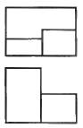
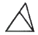
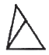
(정답률: 36%)

2. 골프장 설계 중 그린(green)지역의 설명으로 틀린 것은?
- 그린(green)은 홀(hole)의 시작부분에 위치하는 지역이다.
- 그린에서 득점목표 구멍으로 컵(cup)이 있으며, 깃대가 꽂히게 된다.
- 홀의 크기는 직경이 4.25인치, 깊이가 4.0인치 이상으로 하여야 한다.
- 그린에 식재되는 잔디는 밴트그라스가 적합하다.
(정답률: 55%)
3. 인도의 무굴정원 특성으로서 정원을 구성하는 주요소는?
- 화훼(花卉)
- 원정(園亭)
- 녹음수
- 물
(정답률: 77%)
4. 다음 중 리튼(Litton)이 제시한 경관의 훼손가능성(land scape's vulnerability)이 높은 지역이 아닌 것은?
- 밝은 색의 토양
- 산 정상이나 능선 지역
- 혼효림
- 스카이라인, 능선 등과 같은 모서리 부분
(정답률: 63%)
5. 우리나라 자연공원법에서 공원계획으로 결정하는 용도지구가 아닌 것은?
- 공원자연보존지구
- 공원자연경관지구
- 공원밀집마을지구
- 공원집단시설지구
(정답률: 43%)
6. 잔산잉수(殘山剩水)의 설명으로 부적당한 것은?
- 야생초화를 자연풍으로 이식하는 것을 말한다.
- 자연 중의 작은 경치를 몇 부분씩 포함하여 전체로서 하나의 통일된 구도로 마무리 하였다.
- 중국 남송의 산수화에서 사용되었던 용어이다.
- 연못안, 연못가의 의도적인 석조를 중심으로 하는 국부의장에서 볼 수 있다.
(정답률: 52%)
7. 다음 중 시설공간의 규모산정에 필요한 회전율을 가장 잘 설명한 것은?
- 한 이용자가 각 시설을 이용하는 비율을 의미한다.
- (최대시(最大時) 이용자수 / 최대일(最大日) 이용자수)를 의미한다.
- 여러 개의 시설 중 한 시설만을 여러 명이 돌아가며, 이용하는 회수를 의미한다.
- (단독시설 이용자수 / 전체시설 이용자수)를 의미한다.
(정답률: 85%)
8. 중국의 육조시대(六朝時代)에 신선설(神仙設)에 입각하여 한층 더 발달 된 정원 양식은?
- 고산수 정원
- 중도식 정원
- 중정식 정원
- 축경식 정원
(정답률: 58%)
9. “형태는 기능을 따른다.(form follows function)”는 말은 건축의 기능적인 필연성이 형태에 그대로 표현되어야 한다는 기능 중심적인 사고였는데, 이러한 주장을 한 사람은?
- 라이트(Frank Lloyd Wright)
- 루이스 설리반(Louis Sullivan)
- 르 꼬르뷰지에(Le Corbusier)
- 오트 와그너(Otto Wagner)
(정답률: 42%)
10. 자연의 의미로 “사람은 땅을 법칙 삼아 어긋나지 않고, 땅은 하늘을 법칙 삼아 어긋나지 않고, 하늘은 도를 법칙 삼아 어긋나지 않고, 도는 자연을 법칙 삼아 어긋나지 않는다.(人法地, 地法天, 天法道, 道法自然)”라고 말한 사람은 누구인가?
- 공자
- 맹자
- 노자
- 장자
(정답률: 59%)
11. 조경설계 품셈 적용시 조경수목과 잔디의 할증률은 각각 몇 % 까지를 적용할 수 있는가?
- 조경용 수목 20%, 잔디 10%
- 조경용 수목 10%, 잔디 10%
- 조경용 수목 10%, 잔디 20%
- 설계자가 임의로 결정한다.
(정답률: 67%)
12. 프레드릭 로 옴스테드(Frederick Law Olmsted)와 관련이 없는 것은?
- 센트럴 파크
- 리버사이드 단지
- 시카고 박람회의장
- 수도권 공원계통
(정답률: 49%)
13. 색상이 다른 두 색을 인접시켜 배치하면 두 색이 색상환에서 서로 더 멀어지려는 현상은?
- 색상대비
- 보색대비
- 채도대비
- 명도대비
(정답률: 74%)
14. 다음 중 입면도를 가장 잘 표현한 그림은?
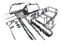
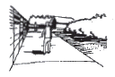
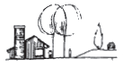
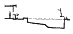
(정답률: 53%)
15. 다음 설명은 어떤 조경계획의 단계를 위한 것인가?
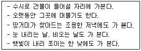
- 현황분석 단계에서 현장 감각을 얻기 위하여
- 기본구상 단계에서 프로그램을 개발하기 위하여
- 관리계획을 수립하기 위하여
- 시공단계에서 시공 도면을 작성하기 위하여
(정답률: 76%)
16. 조경계획의 과정은 조사분석 → 종합 → 발전 과정으로 구분한다. 다음 중 발전 및 시행단계에 해당하지 않는 것은?
- 계획설계
- 실시설계
- 대안작성평가
- 이용 후 평가
(정답률: 14%)
17. 자연의 형체나 색채를 떠나서 형체를 기하학적으로 단순화하여 선과 면의 구성으로 순수한 구성 질서에 의한 아름다운 화면을 창조하였고, 현대 디자인에 영향을 준 20세기 화파는?
- 인상파
- 야수파
- 입체파
- 추상파
(정답률: 57%)
18. 환경과 관련된 동식물의 생활사 중 ( ) 안에 가장 적합한 용어는?
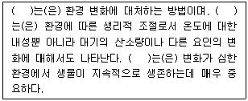
- 경쟁
- 타감
- 이주
- 순화
(정답률: 55%)
19. 다음 내용의 ( )에 가장 적절한 용어는?
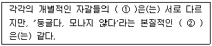
- ① 형(shape), ② 형태(orm)
- ① 형태(orm), ② 형(shape)
- ① 개념(concept), ② 형(shape)
- ① 개념(concept), ② 형태(orm)
(정답률: 54%)
20. 색의 후퇴에 대한 설명 중 틀린 것은?
- 차가운 색이 따뜻한 색보다 더 후퇴하는 느낌을 준다.
- 어두운 색이 밝은 색보다 더 후퇴하는 느낌을 준다.
- 명도·채도가 높은 색이 명도·채도가 낮은 색보다 더 후퇴하는 느낌을 준다.
- 무채색이 유채색보다 더 후퇴하는 느낌을 준다.
(정답률: 71%)
2과목: 조경식재
21. 그림과 같은 수형과 잎의 형태에 가장 적합한 수종은?
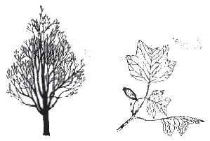
- Quercus aliena Blume
- Betula schmidtii Regel
- Magnolia obovata Thunb.
- Liriodendron tulipifera L.
(정답률: 32%)
22. 우리나라의 도시 건물이 대형화 추세에 있고, 녹지 확보가 어려운 실정을 고려한다면 대형빌딩의 옥상정원 조성이 크게 신장하고 있다. 옥상과 지상 녹지의 환경 특성을 비교한 내용 중 틀린 것은?
- 온도는 지상에서 낮고, 온도변화는 옥상에서 크다.
- 수광 정도는 옥상이 지상보다 양호하다.
- 옥상에서는 바람의 영향이 크게 작용하므로 수고가 큰 교목은 가급적 식재를 지양한다.
- 지상 녹지에서는 주변을 전망하는 시계가 불량하다.
(정답률: 46%)
23. 임해매립지의 오니층이 가라앉은 가장 낮은 중심부에서 주변부로 통하도록 배수로를 판 다음 이곳에 모래흙을 넣고 수목을 식재하는 방법은?
- 객토법(客土法)
- 사주법(砂住法)
- 사구법(砂溝法)
- 성토법(盛土法)
(정답률: 50%)
24. 다음 중 광포화점이 낮아 적은 광량 밑에서도 동화작용을 할 수 있는 조경수종들만으로 짝지워진 것은?
- 가문비나무, 붉나무, 소귀나무
- 낙엽송, 치자나무, 가시나무
- 식나무, 주목, 사철나무
- 두릅나무, 전나무, 순비기나무
(정답률: 58%)
25. 개잎갈나무의 학명은?
- Cedrus deodara Loudon
- Sophora japonica L.
- Buxus koreana Nakai ex Chung & al.
- Taxodium distichum Rich.
(정답률: 35%)
26. 임해매립지의 녹지조성 요령에 대한 설명으로 부적합한 것은?
- 바닷물이 튀어오르는 곳에는 갯잔디, 버뮤다그라스를 식재한다.
- 토양내 질소분이 결핍되는 경우가 많으니 비료목을 혼식한다.
- 전방수림에 이어지는 후방수림은 주위경관과 어울리는 내조성 수종으로 조성한다.
- 바닷바람을 받는 전방수림은 오리나무, 잎갈나무 등으로 조성한다.
(정답률: 40%)
27. “Campsis grandifolia K. Schum.”가 꽃피는 개략적인 시기는?
- 3 ~ 4월
- 5 ~ 6월
- 8 ~ 9월
- 10 ~ 11월
(정답률: 46%)
28. 단풍나무류(Acer)에 속하지 않는 것은?
- 붉나무
- 고로쇠나무
- 복자기나무
- 신나무
(정답률: 50%)
29. 자동차의 배기가스에 가장 약한 수종은?
- Platanus occidentalis L.
- Pinus densiflora siebold & Zucc.
- Ginkgo biloga L.
- Ligustrum obtusifolium Siebold % Zucc.
(정답률: 40%)
30. 호수 주변 연안대의 자생식물 중 추수식물(抽水植物, 정수식물)이 아닌 것은?
- 큰고랭이
- 부들
- 줄
- 순채
(정답률: 30%)
31. 뛰어난 시각적 특성을 지닌 수목을 독립수로 식재하여 개체수목의 미적 가치가 높게 평가되도록 하는 식재양식은?
- 강조식재
- 기초식재
- 군집식재
- 표본식재
(정답률: 44%)
32. 식물생육에 이상적은 흙의 용적 비율은?
- 광물질 25%, 수분 15%, 유기질 20%, 공기 40%
- 광물질 5%, 수분 40%, 유기질 15%, 공기 40%
- 광물질 55%, 수분 25%, 유기질 5%, 공기 15%
- 광물질 45%, 수분 30%, 유기질 5%, 공기 20%
(정답률: 43%)
33. 식물의 학명을 표시하는 방법으로 옳은 것은?
- 속명, 종명, 명명자로 구성되고, 속(屬)명의 첫글자는 대문자로 시작하여 종(種)명은 소문자로 쓴다.
- 과명, 속명, 명명자로 구성되고, 모두 대문자로 쓴다.
- 과명, 속명, 명명자로 구성되고, 종(種)명만 첫글자를 대문자로 시작하고, 속명은 소문자로 쓴다.
- 속명, 종명, 명명자로 구성되고, 대문자나 소문자 구분없이 쓸 수 있다.
(정답률: 53%)
34. 수목의 수피(樹皮)가 백색인 것은?
- Betula platyphylla var. japonica Hara
- Quercus dentata Thunb. ex Murray
- Celtis sinensis Pers.
- Liriodendron tulipifera L.
(정답률: 53%)
35. 암흑상태에서 식물은 호흡작용만을 함으로써 CO2를 방출한다. 암흑상태에서 서서히 광도가 증가하면 광합성을 시작하면서 CO2를 흡수하기 시작하는데, 어떤 광도에 도달하면 호흡작용으로 발출되는 CO2의 양과 광합성으로 흡수하는 CO2의 양이 일치하게 된다. 이점을 무엇이라 하는가?
- 고사한계점
- 광보상점
- 동화효율점
- 영구위조점
(정답률: 70%)
36. 일반적인 식생도를 말하는 것으로 상관적 식생도라고도 하며, 조사구역 내에서 식생상관과 우점종을 중심으로 군락명을 정하여 군락 구분을 지도상에 표시하는 것을 무엇이라고 하는가?
- 녹지자연도
- 현존식생도
- 종다양도
- 우점도
(정답률: 43%)
37. 다음 중 척박지에서 내성이 가장 강한 수종은?
- Albizia julibrissin Durazz.
- Camellia japonica L.
- Quercus myrsinaefolia Blume
- Betula schmidtii Regel
(정답률: 38%)
38. 수림으로 조성한 방풍림대(防風林帶)의 가장 알맞은 식재열수와 너비 조건은?
- 4줄 까지가 알맞고, 너비는 10m 내외
- 6줄 까지가 알맞고, 너비는 40m 내외
- 7줄 까지가 알맞고, 너비는 70m 내외
- 9줄 까지가 알맞고, 너비는 120m 내외
(정답률: 59%)
39. 붉은 색의 열매를 갖는 수종들로만 짝지어진 것은?
- 모과나무, 명자나무, 배나무
- 쥐똥나무, 좀작살나무, 뽕나무
- 산수유, 사철나무, 주목
- 은행나무, 탱자나무, 붉나무
(정답률: 56%)
40. 정형식재의 기본 패턴(모양)이 아닌 것은?
- 교호식재(交互植栽)
- 대식(對殖)
- 열식(列植)
- 군식(群植)
(정답률: 45%)
3과목: 조경시공
41. 타일을 바탕 벽면에 붙일 때 바탕면에 수평으로 먹치기를 하기 위해 사용하는 가장 간단한 기구는?
- 수평자
- 레벨
- 다림추
- 물통수준기
(정답률: 41%)
42. 준공을 앞두고 유지관리지침서를 작성하려고 한다. 포함하지 않아도 될 사항은?
- 제품 가격
- 주요 설계기준
- 기기·부품 목록
- 청소방법 등의 특수마무리에 대한 보수지침서
(정답률: 61%)
43. 평판측량의 오차는 평판을 세울 때 발생하는 오차와 기계적인 오차로 구분된다. 다음 중 평판을 세울 때 발생되는 오차가 아닌 것은?
- 구심의 불완전에 의한 오차(구심오차)
- 표정의 경사에 의한 오차(정준오차)
- 앨리데이드에 의한 오차(외심오차)
- 표정의 불완전에 의한 오차(표정오차)
(정답률: 56%)
44. 다음 보기의 내용을 참고하여 공사의 입찰순서로 가장 적합한 것은?
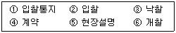
- ① → ② → ③ → ④ → ⑤ → ⑥
- ① → ② → ⑤ → ⑥ → ③ → ④
- ① → ⑤ → ② → ⑥ → ③ → ④
- ① → ⑤ → ③ → ② → ⑥ → ④
(정답률: 57%)
45. 콘크리트 중의 공기량 변화에 대한 설명으로 틀린 것은?
- AE제의 혼합량이 증가하면 공기량도 증대된다.
- 컨시스턴시가 커지면 공기량이 증가한다.
- 콘크리트의 온도가 낮으면 공기량이 감소한다.
- 잔골재 중의 0.15 ~ 0.3 mm의 골재가 많으면 공기량이 증가한다.
(정답률: 13%)
46. 일반적으로 도시지역의 인공수로 및 잔디수로에서의 유속범위 중 최소 유속(m/sec)으로 가장 적합한 것은?
- 0.2
- 0.6
- 1.2
- 2.5
(정답률: 42%)
47. 다음 그림의 벽돌쌓기는 벽돌의 마구리 쪽이 전면으로 오도록 놓으면서 쌓는 방법으로 몇 장(B) 쌓기인가?
- 1.0
- 1.5
- 2.0
- 3.0
(정답률: 54%)
48. 밑면(A2)의 면적이 40m2, 윗면(A1)의 면적이 35m2, 윗면과 밑면의 거리가(l)가 10m 일 때 양단면평균법으로 계산한 육면체의 체적(m3)은?
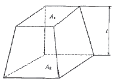
- 37.5
- 140
- 375
- 1400
(정답률: 63%)
49. 경사진 지역에 면적(面積)인 배수를 위해 설치하는 것으로 경사진 주차장 입구, 계단의 상·하단, 광장의 입구, 진입로의 입구 등에서 흔히 볼 수 있는 것은?
- 빗물받이
- 트렌치(trench)
- 측구(side gutter)
- 지역 배수구(area drain)
(정답률: 40%)
50. 건설기계경비 산정에 있어 기계손료(機械損料)의 항목에 포함되지 않는 것은?
- 소모품비(消耗品費)
- 감가상각비(減價償却費)
- 정비비(整備費)
- 관리비(管理費)
(정답률: 17%)
51. 나무말뚝(wood pile)과 관련된 설명 중 틀린 것은?
- 소나무, 낙엽송 등으로서 곧기 긴 생나무(生木)를 사용한다.
- 나무말뚝 머리는 모두 동일한 수평면으로 가지런히 자른다.
- 나무말똑은 상수면 보다 윗 쪽에 있는 것이 관리하기 좋다.
- 끝마구리와 밑마구리의 테이퍼(taper)가 적은 것을 사용한다.
(정답률: 46%)
52. 비탈면의 경사가 1 : 1.5 일 때, 수평거리가 3m 이면 수직거리(m)는 얼마인가?
- 1.5
- 2.0
- 3.0
- 4.5
(정답률: 35%)
53. 옥외에 쓰레기통을 만들 때 고려해야 할 사항으로 부적합한 것은?
- 방화구조로 만든다.
- 배수가 잘되게 만든다.
- 쓰레기를 쉽게 수거할 수 있는 구조로 만든다.
- 친환경적인 색으로 눈에 잘 뜨이지 않게 만든다.
(정답률: 50%)
54. 보통시멘트 500포대를 저장할 수 있는 가설창고의 면적(m2)은? (단, 쌓기 단수는 10포대로 한다.)
- 10
- 20
- 30
- 40
(정답률: 47%)
55. 바 차트(bar chart) 기법과 PERT/CPM 기법의 특징 설명으로 틀린 것은?
- 바 차트(bar chart) 기법은 작업의 선·후 관계가 불명확하다.
- 바 차트(bar chart) 기법은 일정의 변화에 손쉽게 대처하기 곤란하다.
- PERT/CPM 기법은 문제점의 사전 예측이 곤란하다.
- PERT/CPM 기법은 바 차트(bar chart) 기법 보다 작성이 힘들다.
(정답률: 42%)
56. 공원 조성시 성토한 지역의 특징으로 부적합한 것은?
- 성토를 한 지역은 배수가 용이하고, 건조되기 쉬워 자주 관수 해 줄 필요가 있다.
- 지반이 수평인 경우에도 풍화된 표토를 제거하거나 계단 모양으로 기초면을 만든다.
- 성토를 하는 곳은 점질토(粘質土)를 사용하는 것이 점성이 있어 무너지지 않고 습기가 많아 식물의 생욱에 유리하다.
- 성토를 하는 곳은 침하를 고려하여 성토 높이의 약 10% 정도를 더 높게 쌓아 주어야 한다.
(정답률: 39%)
57. 시멘트의 단위용적중량은 시멘트의 비중, 분말도, 풍화정도에 따라 다르나 일반적인 표준치(kg/m3)로 가장 적당한 값은? (단, 자연상태를 기준으로 한다.)
- 1300
- 1500
- 1700
- 2000
(정답률: 58%)
58. 벽돌쌓기법에서 한 켜마다 길이 쌓기와 마구리 쌓기를 번갈아 쌓는 방법으로 통줄눈이 많이 생겨 구조적으로 튼튼하지 못하지만 외관이 좋은 쌓기 방법은?
- 영국식
- 프랑스식
- 네덜란드식
- 미국식
(정답률: 35%)
59. 토목공사용 기계인 쇼벨(shovel)의 작업 용도로만 모두 나열된 것은?
- 부설용
- 정지용
- 굴착용, 싣기용
- 다짐용, 싣기용, 운반용
(정답률: 58%)
60. 피막식(membrane) 방수공법에는 아스팔트 방수, 시트 방수, 도막 방수가 있는데, 그 중 아스팔트 방수의 특징으로 옳은 것은?
- 외기에 대한 영향이 비교적 크다.
- 시공이 번잡하다.
- 재료취급이 간단하다.
- 결함부 발견이 용이하다.
(정답률: 34%)
4과목: 조경관리
61. 토양, 온도, 일조 등의 항목은 조경관리계획의 수립조건에 비추어 볼 때 어느 항목에 속하는가?
- 자연조건
- 인위조건
- 시설조건
- 사회조건
(정답률: 67%)
62. 대부분의 화목류의 화아형성을 촉진하기 위하여 주어야 할 비료와 시기는?
- 인산질 비료를 7 ~ 8월에 준다.
- 인산질 비료를 3 ~ 4월에 준다.
- 질소질 비료를 3 ~ 4월에 준다.
- 질소질 비료를 7 ~ 8월에 준다.
(정답률: 25%)
63. 향나무녹병(赤星病)에 관한 설명 중 틀린 것은?
- 배나무, 모과나무, 꽃사과 등에는 발생하지 않는다.
- 4월 ~ 5월경 비가 자주오면 겨울 포자퇴는 노란색의 한천모양으로 불어난다.
- 향나무 잎이나 가지 사이의 분기점에 갈색의 균체가 형성된다.
- 녹포자 비산기인 7월 초순경에 만코지수화제를 살포한다.
(정답률: 53%)
64. 레크레이션 분야에 수용능력(carrying capacity)이란 용어를 처음 사용한 사람은?
- Ashton
- Wager
- Lapage
- Lucas
(정답률: 62%)
65. 가지 아래 방향으로 달린 바깥 눈을 자르고 가지 윗 쪽의 안 눈을 살려야 자연스러운 수형 형성이 가능한 수종은?
- 수양벚나무
- 백목련
- 배롱나무
- 수수꽃다리
(정답률: 34%)
66. 다음 순자르기(순꺾기) 방법에 관한 설명 중 ( ) 에 적합한 것은?
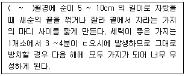
- 7 ~ 9
- 10 ~ 12
- 1 ~ 3
- 4 ~ 5
(정답률: 58%)
67. 원로나 광장에서 모래·자갈 포장의 정기점검 보수 항목은?
- 배수정비
- 균열보수
- 노화정비
- 줄눈보수
(정답률: 35%)
68. 미국흰불나방과 관련된 설명으로 틀린 것은?
- 년 1회 발생하며 성충은 8월 중수 ~ 9월 하순의 무더위에 출현현다.
- 학명은 Hyphantria cunea 이다.
- 유충기에 피해를 주며 잡식성이어서 거의 모든 활엽수류의 잎을 가해한다.
- 방제법은 산란된 잎을 채취, 소각하거나 발생초기 유충이 군서(群棲)하는 가지를 잘라 소각한다.
(정답률: 38%)
69. 옥외 레크리에이션(recreation) 관리체계에서 주 요소 기능의 관점과 거리가 먼 것은?
- 이용자관리(visitor management)
- 서비스관리(service management)
- 자원관리(resource management)
- 건축물관리(building management)
(정답률: 52%)
70. 활엽수의 질소 결핍 현상을 바르게 설명한 것은?
- 잎은 짧고 소형이 되며 엽색은 황화한다.
- 어린나무의 경우 수관하부의 성숙엽에서 자주빛으로 변색되기 시작하여 점차 안쪽과 위쪽의 잎으로 진행한다.
- 엽맥 간의 황백화현상이 나타나고 심하면 피해부와 건전부위와의 경계가 뚜렷해진다.
- 잎의 끝이 마르거나 뒤틀린다.
(정답률: 47%)
71. 테니스 클레이코트에 뿌리는 소금과 염화칼슘의 역할이 아닌 것은?
- 응고작용
- 보습효과
- 동결방지
- 지력보강
(정답률: 44%)
72. 일반적으로 시설물의 관리작업 시기를 설명한 것 중 부적합한 것은?
- 수목생육이 가장 왕성한 시기에 시설물과 수목을 함께 점검한다.
- 대체로 이용자의 수가 적을 때 점검한다.
- 우기 및 추울 때는 관리작업을 피한다.
- 동일 종류를 종합해서 관리작업한다.
(정답률: 49%)
73. 멀칭(mulching)의 효과로 볼 수 없는 것은?
- 토양침식과 수분의 손실을 방지한다.
- 토양을 굳어지게 한다.
- 염분 농도를 조절한다.
- 토양의 비옥도를 증진시킨다.
(정답률: 68%)
74. 한국 잔디에 가장 잘 발생하는 고온성 병은?
- 브라운 패취(Browm patch)
- 라지 패취(Large patch)
- 달라 스팟(Doller spot)
- 스노우 몰드(Snow mold)
(정답률: 35%)
75. 다음 중 수분 증발 억제제인 것은?
- 세라소일
- 피트모스
- 다미노자이드수화제
- 크라우드카바
(정답률: 20%)
76. 상열(霜㤠)에 대한 설명으로 적합하지 않는 것은?
- 추운 지방에 수액이 얼어서 부피가 증대되면 수간의 외층이 냉각 수축되어 수선방향으로 갈라지는 현상이다.
- 배수가 불량한 토양이 배수가 양호 하거나 건조한 토양보다 발생이 쉽다.
- 낙엽교목이 상록교목보다 수간의 남쪽보다 북쪽이 발생이 쉽다.
- 유목이나 노목보다 왕성한 생장을 하는 시기의 수목(흉고직경 약 15 ~ 46cm)이 갈라지기 쉽다.
(정답률: 37%)
77. 주민들의 참가에 의하여 행하여 질 수 있는 공원관리활동 내용으로 부적합한 것은?
- 운영관리
- 공원관리에 관한 제안
- 놀이기구의 점검
- 화단식재
(정답률: 35%)
78. 전정시의 작업 방법으로 적합하지 못한 것은?
- 가지를 자를 때는 상부의 주지부터 전정한다.
- 상부는 강하게 하부는 약하게 전정한다.
- 강전정을 하면 대체로 세력이 약한 가지가 나오게 되므로, 능수버들과 단풍나무는 강전정을 한다.
- 수관 밖에서부터 작업하여 내부가지를 전정한다.
(정답률: 48%)
79. 손상된 수간(樹幹)의 수술방법이 아닌 것은?
- 개공법
- 피복법
- 충진법
- 수간주사법
(정답률: 40%)
80. 용제에 녹기 어려운 고체의 유효성분을 액제화(液劑化)한 것이며 유효성분을 물에 분산시킨 현탁액제(懸濁液劑)는?
- 수화제
- 수용제
- 미량살포제
- 플로우어블
(정답률: 26%)